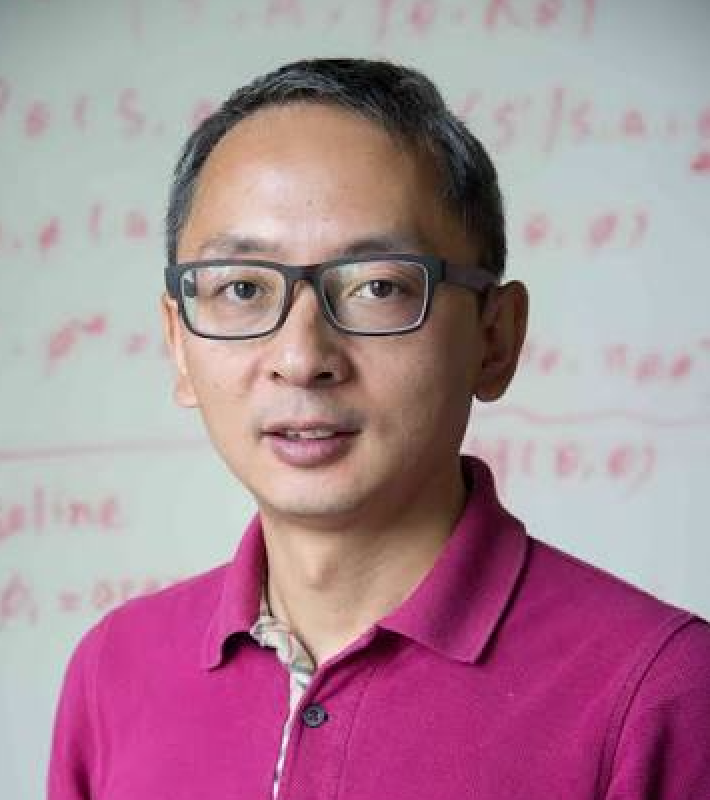

干将项目团队
干将 XRD 项目开发团队
团队依托通用决策智能研究所，汇聚产业研究机构与高校力量，在材料科学、人工智能与工程之间协作。共同推动材料表征智能化，打造首个面向 XRD 材料结构分析的科学智能体。
项目负责人
01核心成员
04
技术支持
05


项目记录与运营
01Na Wang 王纳
项目记录 · 小红书运营
小红书号 95614037352指导专家
02
 GitHub
GitHub 95614037352
95614037352干将项目团队
团队依托通用决策智能研究所，汇聚产业研究机构与高校力量，在材料科学、人工智能与工程之间协作。共同推动材料表征智能化，打造首个面向 XRD 材料结构分析的科学智能体。
项目负责人
01核心成员
04技术支持
05项目记录与运营
01项目记录 · 小红书运营
小红书号 95614037352指导专家
02